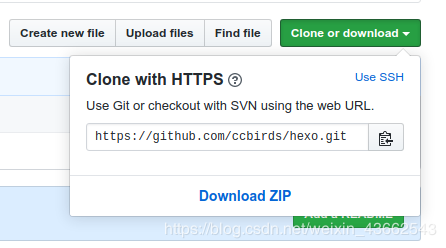

将hexo博客目录备份到github，以防意外删除文件，这样也方便在其他设备上写博客
1. 安装git
1
| $ sudo apt-get install git
|
2.生成ssh key
使用命令
1
| $ ssh-keygen -t rsa -C “github username”
|
会生成下面三个文件
1
| id_rsa id_rsa.pub known_hosts
|
3.github setting
登录github，setting,左边有SSH and GPG keys 选项，点new
ssh key。title随便写，key 填写id_rsa.pub文件中的内容。
新建一个仓库用来备份。
测试ssh key是否成功
1
2
| $ ssh -T git@github.com
Hi ccbirds! You've successfully authenticated, but GitHub does not provide shell access.
|
4.在需要备份的目录下初始化git
1
2
| $ git init
Reinitialized existing Git repository in /home/czq/blog/.git/
|
5.设置git
1
2
3
4
5
| $ git config user.name “github user name”
$ git config user.email “github email”
$ git config user.name //查看设置的name
$ git config user.email //查看设置的邮箱
$ git remote add origin https://github.com/ccbirds/hexo.git //github 仓库地址
|

如果显示origin已经存在,删除origin，并重新设置origin
1
2
| $ git remote rm origin
$ git remote add origin https://github.com/ccbirds/hexo.git
|
6.添加文件
1
2
3
4
5
6
7
8
9
10
| $ git add test.txt //指定一个文件
$ git add . //目录下的所有文件
$ git commit -m "2020-02-27" //备注
$ git push origin master
Username for 'https://github.com': ccbirds //输入用户名
Password for 'https://ccbirds@github.com': //输入密码，密码不会显示
Writing objects: 100% (3/3), 277 bytes | 277.00 KiB/s, done.
Total 3 (delta 0), reused 0 (delta 0)
To https://github.com/ccbirds/hexo.git
da79977..341a1a4 master -> master
|
这样就成功啦
..
...
...